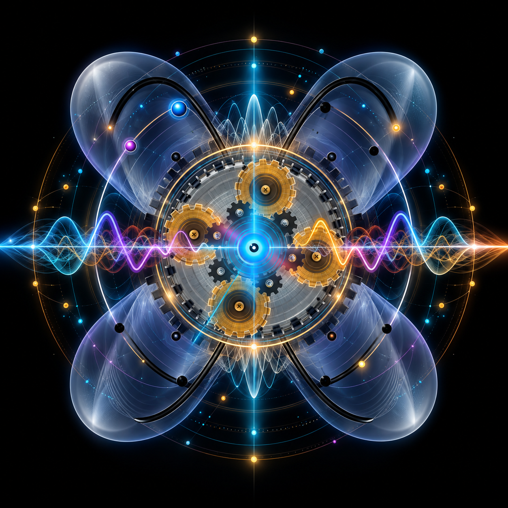
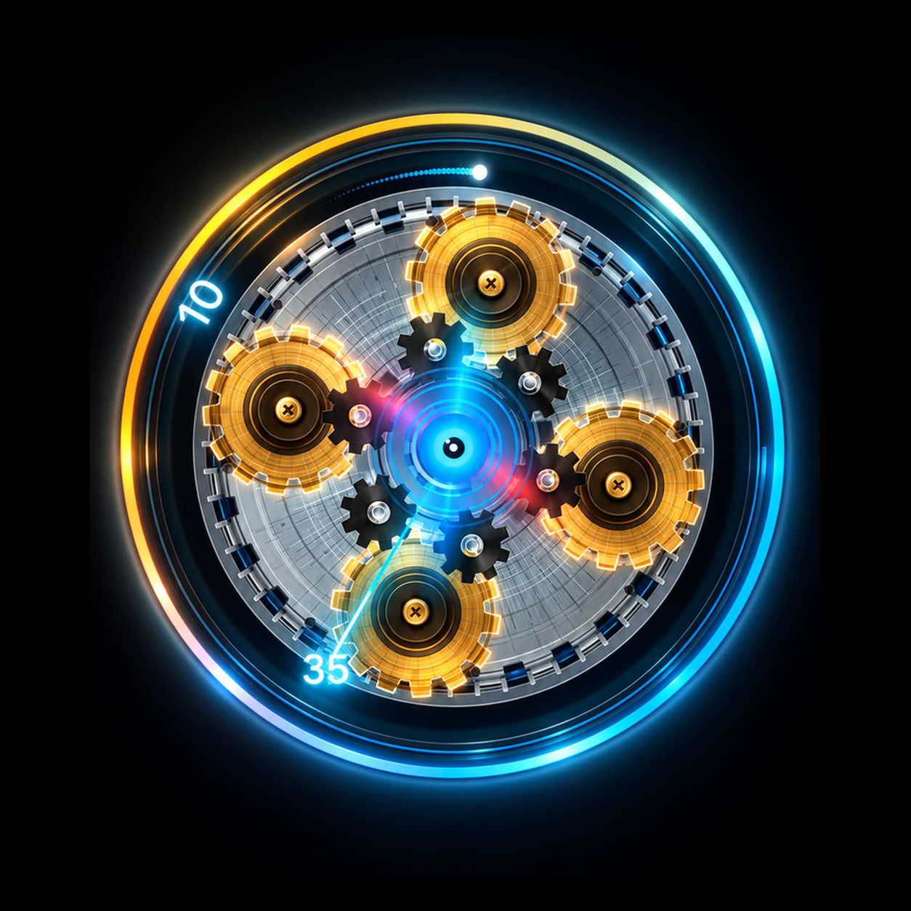
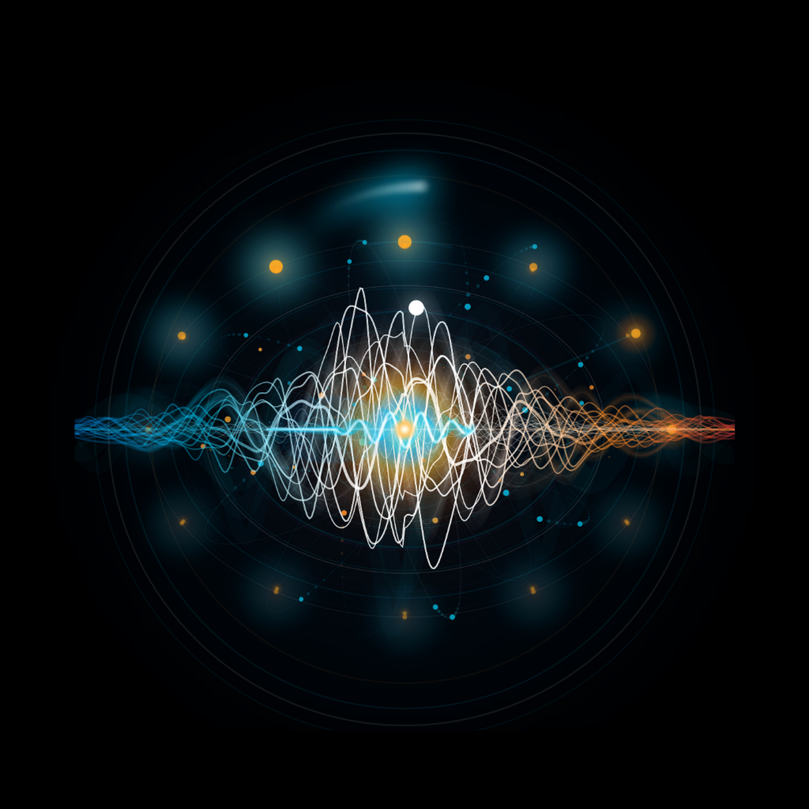
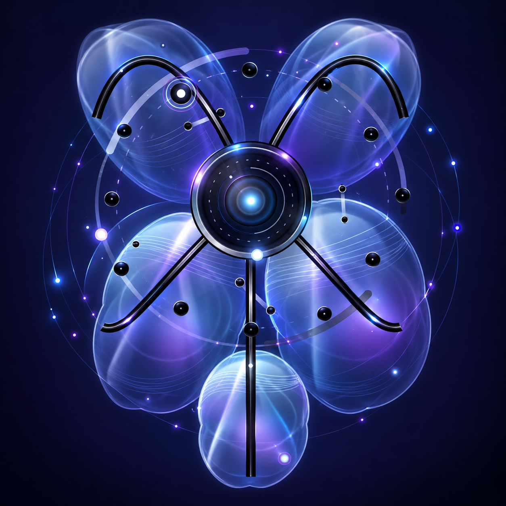
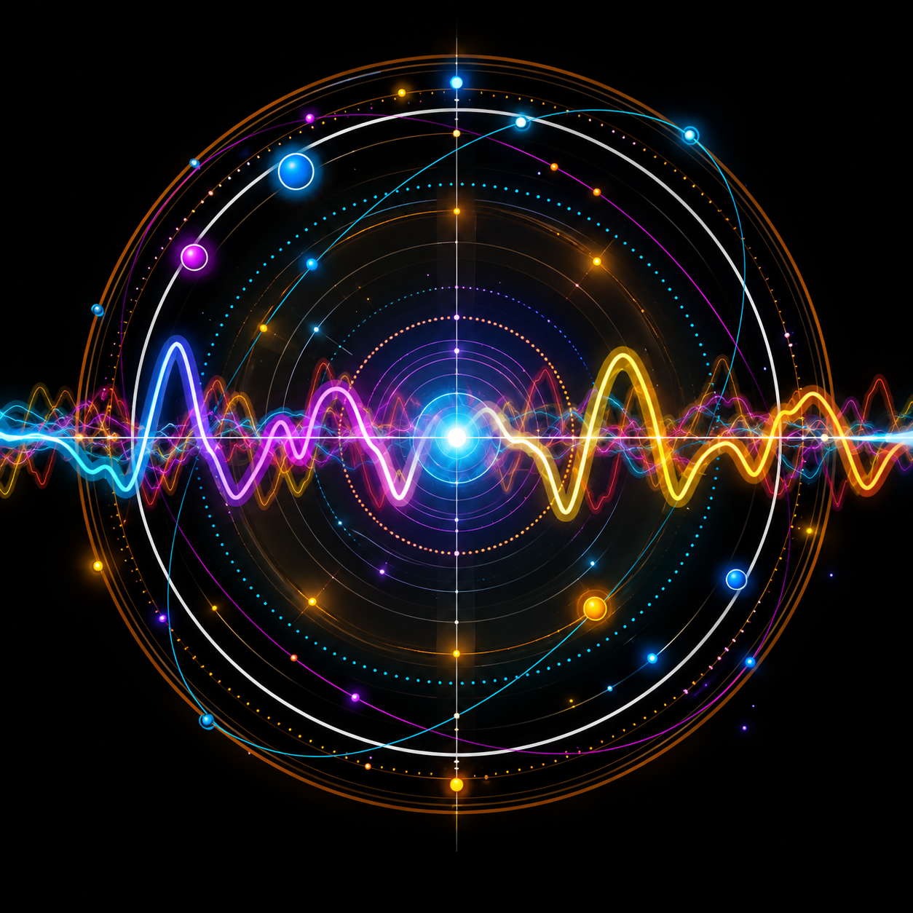
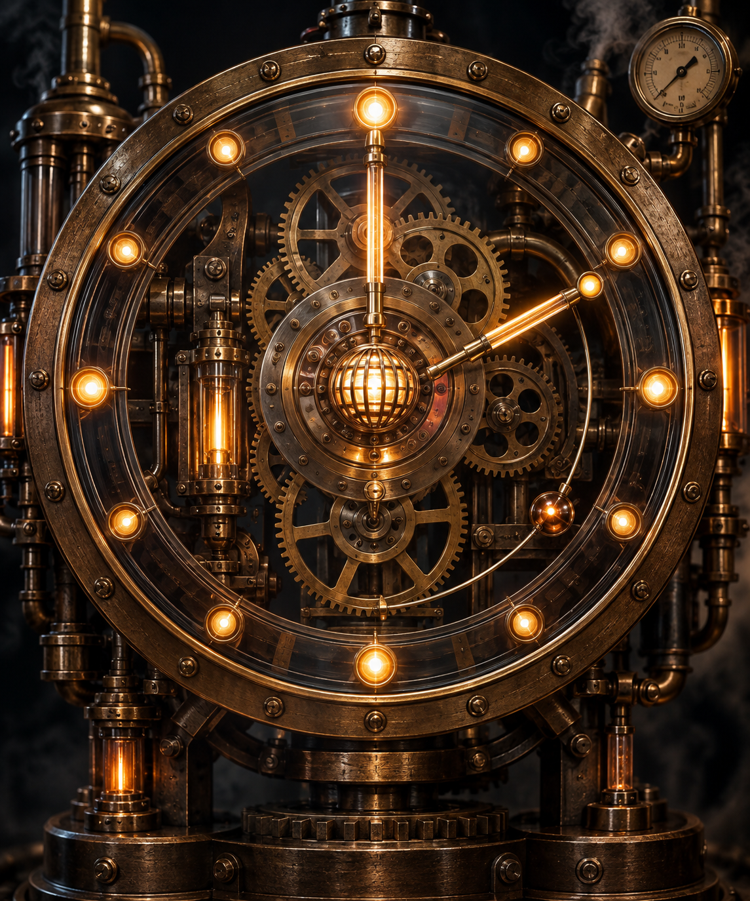

Other worlds.
Built here.
I create visual and sonic experiences that turn time, motion and code into something you can feel.

Not utility.
Experience.

MoodClock.
Time becomes machinery. Gears, light and motion transform the minute into a living mechanical event.
Explore MoodClock →
QuantumClock.
Particles orbit. Fields move. Time becomes something less like a number and more like a place.
Explore QuantumClock →
Chronocyte.
A living visual system that happens to tell time. It pulses, blooms and behaves more like an organism than a clock.

Orbital Sound Machine.
Time doesn’t just pass. It has a voice. Motion, orbit and sound make the arrival of a minute perceptible.

Steampunk.
Pressure, brass, valves and motion. A time machine with too much energy to sit still.
Art made with code.
Independent digital work exploring time, movement, sound and visual systems. Each piece has its own identity. The common thread is curiosity.
Take one with you.
Explore the complete collection of Tom Glander apps on the App Store.
View on the App Store →